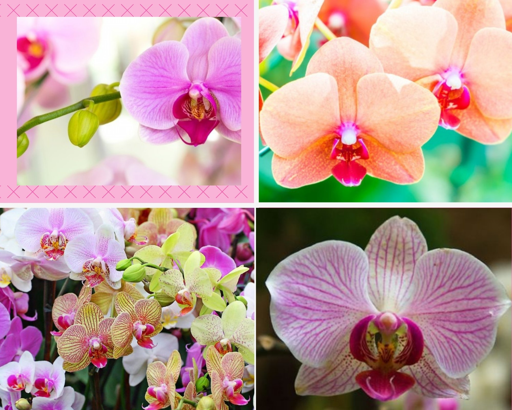

Phalaenopsis es un género de las comúnmente llamadas orquídea alevilla, orquídea mariposa y también orquídeas boca de aproximadamente 60 especies

Las Phalaenopsis no toleran el sol directo, pero son amantes de la luz. Se desarrollan mejor si están cerca de una ventana orientada al sur (con una cortina ligera que las proteja) y como segunda opción una venta al este u oeste.
Aun que crecen mejor en lugares húmedos y cálidos, prosperan bien en diversos climas. Es importante cuidar la Temperatura del día no exceda los 30°C, y que la de la noche no baje de los 16°C.No deben colocarse cerca de aires acondicionados o calefactores.
Las pantas deben regarse hasta que el sustrato este casi seco, con abundante agua, tratando de no mojar las hojas. Puede colocar la planta de debajo del chorro del agua, procurando que este a temperatura ambiente y que no esté clorada. Es importante permitir que escurra el agua. No coloque platos debajo de la maceta para recoger el exceso de agua.
Es recomendable fertilizar la planta cada segundo riego. Utilice un fertilizante soluble de tahi un gramo por litro de agua. Aplique la solución mojando el sustrato.
Es recomendable fertilizar la planta cada segundo riego. Utilice un fertilizante soluble de tahi un gramo por litro de agua. Aplique la solución mojando el sustrato.
Dado que es una planta epifita, requiere de una contante circulación de aire para que crezca mejor y sin enfermedades.
Oriente las flores hacia la fuente de luz y asegúrese que la vara tenga siempre en sostén el apoyo. Cuando la floración termine, córtela vara con unas tijeras limpias y filosas lo más cercano posible a la base, teniendo cuidado de no lastimas las raíces. No la arranque.